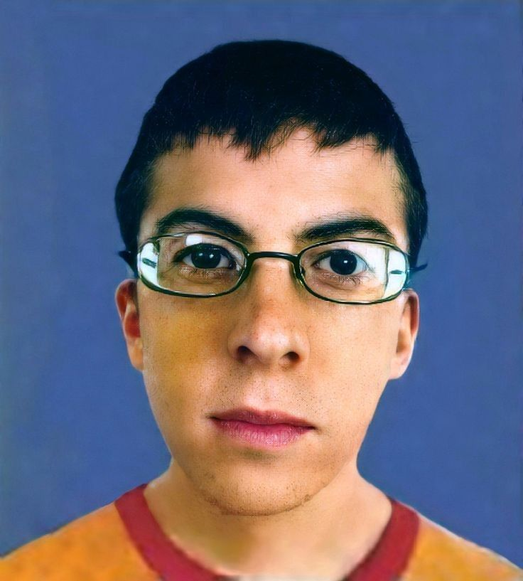
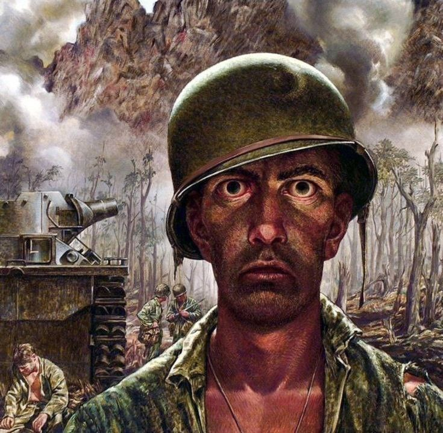
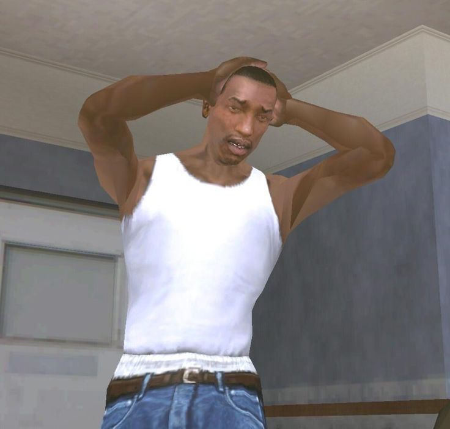
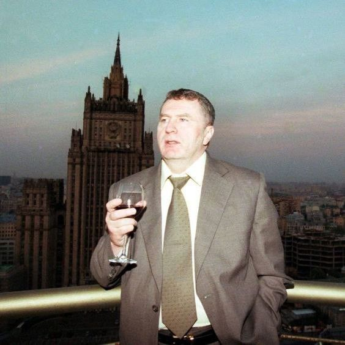
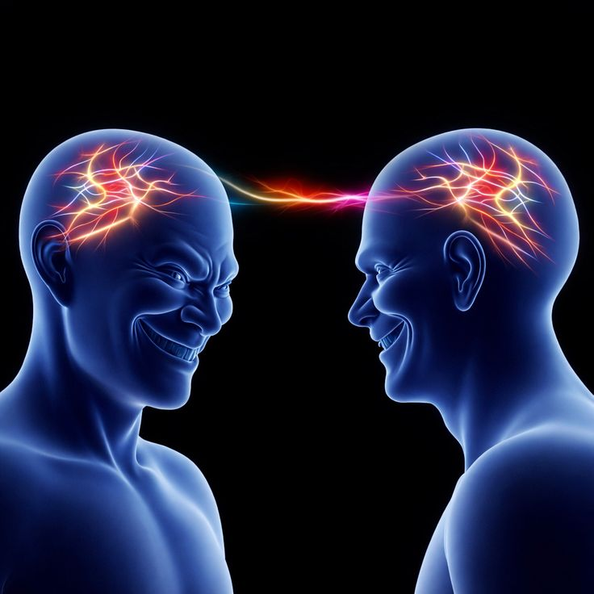
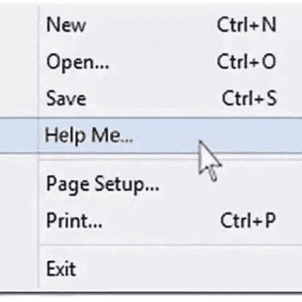
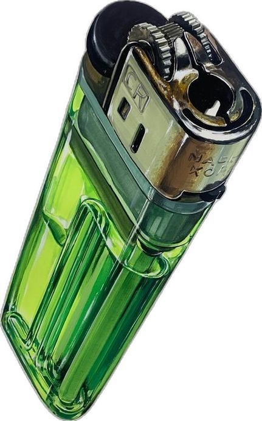
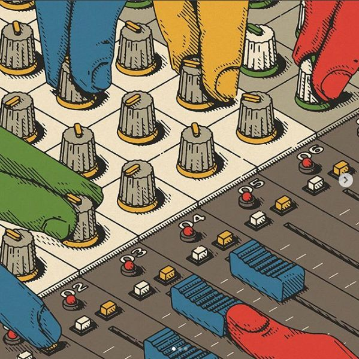
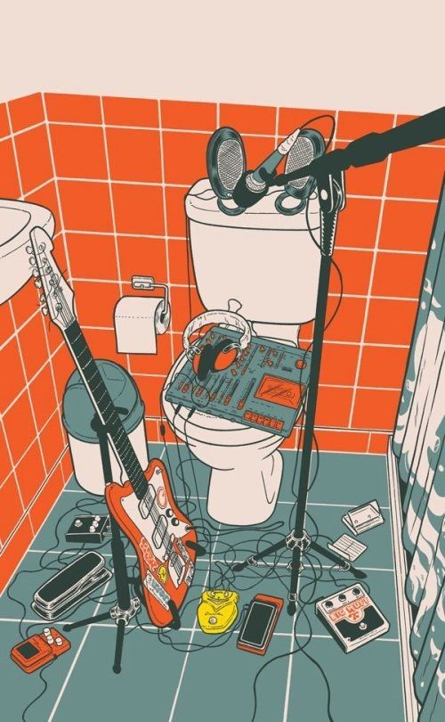

Оригинал
grayscale(100%)
grayscale()
Преобразует изображение в оттенки серого. Значение от 0% (без изменений) до 100% (полностью чёрно‑белое).

Оригинал
blur(5px)
blur()
Размывает изображение. Значение указывается в пикселях. Чем больше значение, тем сильнее размытие.

Оригинал
brightness(150%)
brightness()
Регулирует яркость изображения. 100% — без изменений. Меньше 100% — изображение темнее, больше 100% — светлее.

Оригинал
contrast(200%)
contrast()
Изменяет контраст изображения. 100% — стандартное значение, больше — усиливает контраст.

Оригинал
16px 16px 20px rgb(131, 131, 240)
drop-shadow()
Добавляет тень к изображению. Параметры: смещение по X, по Y, размытие и цвет.

Оригинал
hue-rotate(90deg)
hue-rotate()
Изменяет оттенок изображения. Значение задаётся в градусах (deg).
Оригинал
invert(100%)
invert()
Инвертирует цвета изображения. 100% — полностью инвертированные цвета.

Оригинал
opacity(50%)
opacity()
Изменяет прозрачность изображения. 0% — полностью прозрачное, 100% — полностью видимое.

Оригинал
saturate(300%)
saturate()
Изменяет насыщенность цветов. 100% — стандартное значение, больше — цвета становятся ярче.

Оригинал
sepia(80%)
sepia()
Добавляет эффект старой фотографии. 100% — полностью выраженный эффект сепии.

Оригинал
contrast(155%) brightness(130%)
Несколько фильтров
Можно применять несколько фильтров одновременно, перечисляя их через пробел.